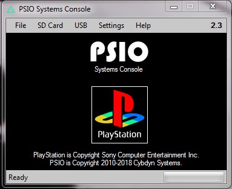
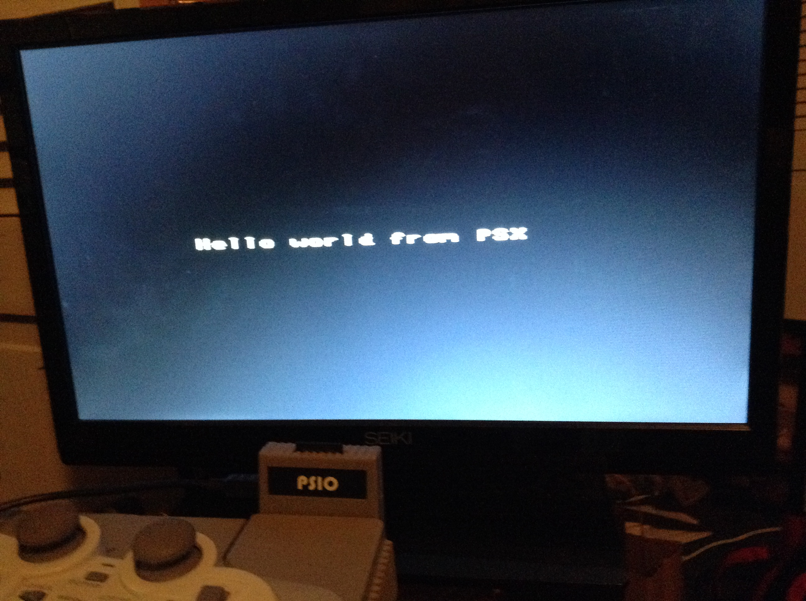
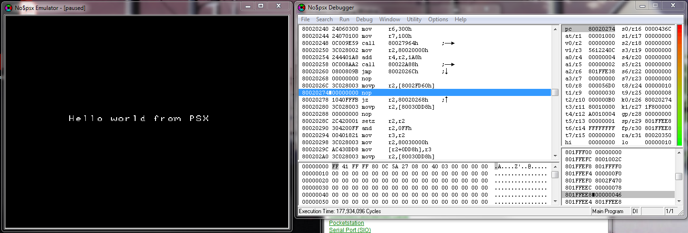

Port SDL (Simple DirectMedia Layer) 1.2 to the SONY Playstation 1
https://bitbucket.org/williamblair/psx_sdl/
https://bitbucket.org/williamblair/psx_sdl_scratch/
Ideally, we'd wanna use a hardware debugger setup. Just recently, a user by the name of Lameguy64 released such a thing! However, it requires LiteLoad, a different method uploading from PC to PS1 using the serial port (as opposed to the parallel port of PSIO), so I won't be using it any time soon :(
Youtube: https://www.youtube.com/watch?v=YSgkBlS0oGs
Github: https://github.com/Lameguy64/PSn00b-Debugger
Instead, I'll mainly be testing on an emulator; NO$PSX, which has a good amount of debugging utility - however, it doesn't support C line by line debugging (it does for assembly, though) so it's not perfect. Basically this means I'm stuck with printf debugging for the most part.
Testing on physical hardware will be done through PSIO. You can check out my little page on psio here, but basically what it does is plug into the parallel port of the playstation and lets you run games off of an SD card.
The reason for using PSIO for hardware testing is that a) you don't have to burn your image to a CD to run it, and b) you don't even have to copy it to an SD card since you can boot directly off your PC through a usb cable that plugs into the PSIO!
You send the game from the PC to PSIO via the systems console program (Windows only, unfortunately)
Since the PS1 has a MIPS r3000 CPU, a MIPS GCC compiler needs to be installed first (following the `toolchain.txt` instructions included with PSXSDK source).
Installed binutils 2.31, downloaded from here. Configure and install for MIPS with:
./configure --prefix=/usr/local/psxsdk --target=mipsel-unknown-elf --with-float=soft make sudo make install
Configure and install gcc 7.2.0, downloaded from here. Configure and install with:
mkdir psx_gcc_build && cd psx_gcc_build /path/to/gcc/configure --disable-libada --disable-libssp --target=mipsel-unknown-elf \ --prefix=/usr/local/psxsdk --with-float=soft --disable-nls \ --disable-libstdc++v3 --disable-libstdc__-v3 CFLAGS=-std=c99 \ --enable-languages=c,c++ make sudo make install
Finally, install psxsdk, downloaded from here, release 20180115. First, edit
Makefile.cfgto set the proper `make`, `toolchain_prefix`, and `examples_vmode`. Examples vmode sets whether to initialize video for a PAL or NTSC playstation. toolchain_prefix is where to install psxsdk, and 'make' is the make executable to use (e.g. 'make', 'gmake', 'mingw32-make', etc.). Configure and install with:
export PATH=$PATH:/path/to/psxsdkdir make sudo make install
You should then add `export PATH=$PATH:/path/to/psxsdk` to your bashrc or profile. Then you should be able to run `psx-gcc -v` and it should output something similar to this:
Using built-in specs. COLLECT_GCC=mipsel-unknown-elf-gcc COLLECT_LTO_WRAPPER=/usr/local/psxsdk/libexec/gcc/mipsel-unknown-elf/7.2.0/lto-wrapper Target: mipsel-unknown-elf Configured with: /home/bj/gcc-7.2.0/configure --disable-libada --disable-libssp --target=mipsel-unknown-elf --prefix=/usr/local/psxsdk --with-float=soft --disable-nls --disable-libstdc++v3 --disable-libstdc__-v3 CFLAGS=-std=c99 --enable-languages=c,c++ Thread model: single gcc version 7.2.0 (GCC)
Since PSIO is windows only, all of this was done in a virtual machine running Arch Linux, with shared folders configured, so we can compile on linux and still run/access the code through windows.
You can find examples for psxsdk contained in the source archive, plus more here.
Here's a hello world example:
#include <psx.h>
#include <stdio.h>
unsigned int prim_list[0x4000];
volatile int display_is_old = 1;
volatile int time_counter = 0;
int dbuf=0;
void prog_vblank_handler() {
display_is_old = 1;
time_counter++;
}
int main() {
PSX_Init(); // Initialize the PSX
GsInit(); // Initialize Graphics
GsSetList(prim_list); // Tells the graphics system what memory to use to order primitives (zbuffering)
GsClearMem();
GsSetVideoMode(320, 240, EXAMPLES_VMODE); // either VMODE_PAL or VMODE_NTSC
GsLoadFont(768, 0, 768, 256); // Load the PSX bios font into VRAM memory
SetVBlankHandler(prog_vblank_handler); // calls `prog_vblank_handler()` on vblanks
while(1) {
/* don't try to draw unless the screen is ready to redraw */
if(display_is_old) {
/* switch display and draw locations to create double buffering */
dbuf=!dbuf;
GsSetDispEnvSimple(0, dbuf ? 0 : 256);
GsSetDrawEnvSimple(0, dbuf ? 256 : 0, 320, 240);
GsSortCls(0,0,0);
GsPrintFont(70, 120, "Hello world from PSX");
/* draw primitives with order based on prim_list */
GsDrawList();
/* Wait for the GPU to finish */
while(GsIsDrawing());
display_is_old=0;
}
}
return 0;
}
Here's the helloworld example running on the playstation via PSIO:
And here's the helloworld example running in the NO$PSX emulator:
Specs: (Information from Wikipedia)
Below is a visual representation of the PSX's VRAM from a sprite creation utility called TIM Tool. (TIM is the image format normally used by the playstation.) The VRAM is divided into 32 texture pages of size 64x256px. The max width of a sprite texture is 256x256px, or 4 texture pages wide.
As you can see on the far left, the standard display buffer takes up 5 texture pages, or 320x256px. This is the normal resolution used by most games for the playstation.
The frame buffer is NOT directly accessible through memory (no dma); instead you have to send commands to the GPU, through registers GP0 and GP1.